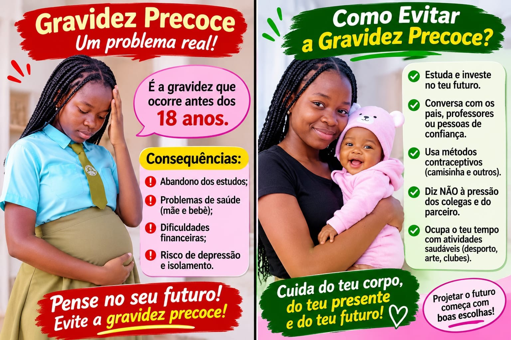
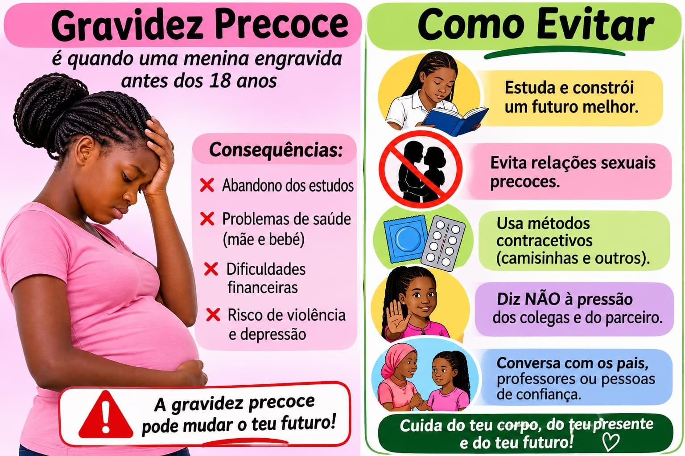
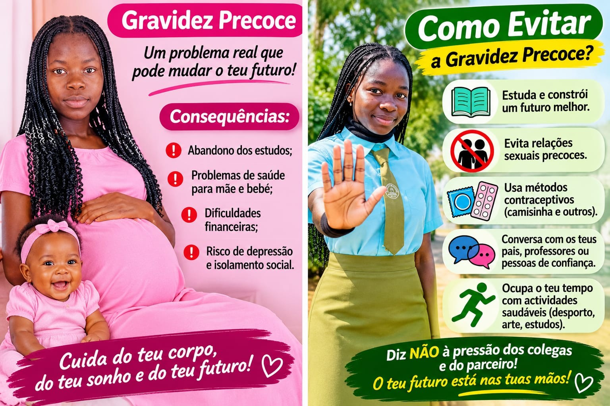
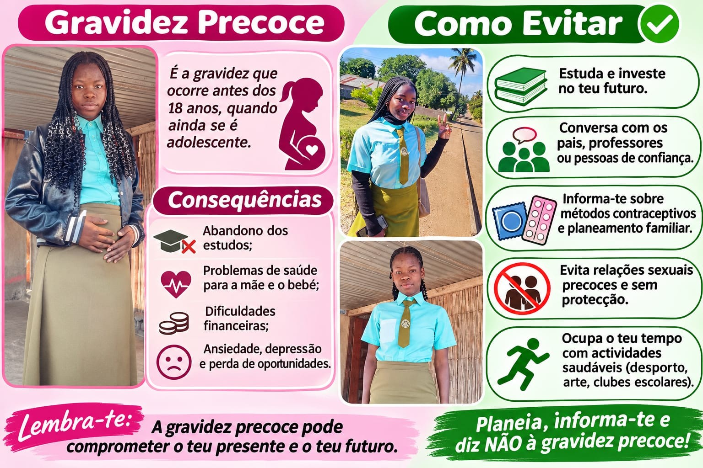

Continuidade dos estudos
A gravidez e as responsabilidades de cuidar de um bebé podem dificultar a frequência escolar, sobretudo sem apoio.
A informação, o diálogo e o acesso a apoio de confiança ajudam os adolescentes a tomar decisões conscientes e a proteger os seus projectos de vida.
Compreender o tema é o primeiro passo para prevenir riscos e procurar apoio.
Fala-se de gravidez na adolescência quando uma rapariga engravida durante esta fase da vida. A situação pode trazer desafios à saúde, à continuidade dos estudos, à vida familiar e aos planos para o futuro.
Cada adolescente merece informação correcta, respeito, protecção e acesso a serviços de saúde acolhedores, sem julgamentos.
Os impactos variam de pessoa para pessoa. O acompanhamento de saúde e o apoio familiar e escolar são importantes.

A gravidez e as responsabilidades de cuidar de um bebé podem dificultar a frequência escolar, sobretudo sem apoio.

A gravidez na adolescência pode envolver riscos de saúde. Consultas pré-natais e orientação profissional são essenciais.

Podem surgir novas responsabilidades, pressão social e dificuldades económicas, tornando importante uma rede de apoio.
Prevenir significa ter informação, poder decidir sem pressão e saber onde encontrar ajuda.

Investe nos estudos, nos teus talentos e nos teus objectivos.
Procura informação correcta sobre saúde sexual e reprodutiva.
Fala com pais, professores ou adultos de confiança.
Nunca aceites pressão ou violência. O consentimento e a segurança são fundamentais.
Procura um profissional de saúde para conhecer os métodos contraceptivos e a sua utilização correcta.
Se precisares de ajuda, procura uma unidade sanitária ou um serviço de aconselhamento para adolescentes.
Materiais visuais para reforçar a informação e promover escolhas conscientes.
Informa-te, faz perguntas, procura apoio e respeita as tuas escolhas. Ninguém deve enfrentar dúvidas ou dificuldades sozinho.